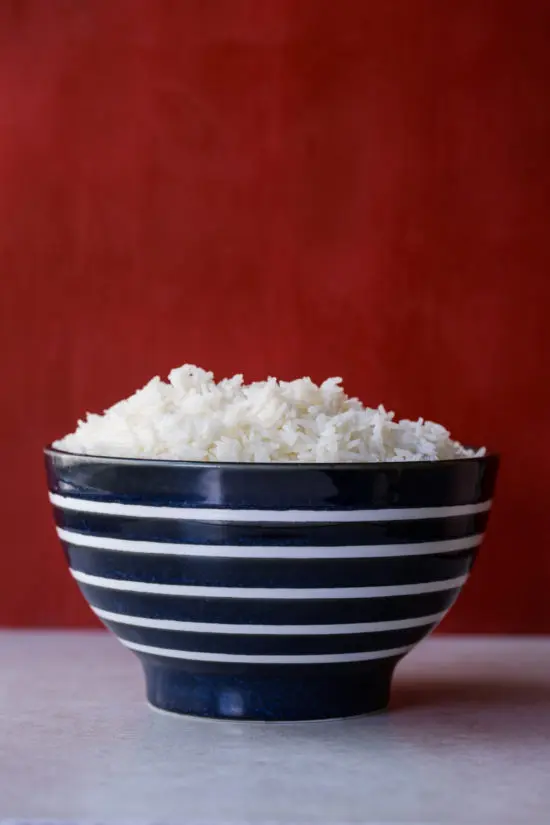

Simple White Rice

How to make a household staple: Basic White Rice
Ingredients
- 2 cups water
- 1/2 tsp salt
- 1 tbsp butter or oil
- 1 cup long grain white rice
Steps
- Bring water to boil in medium sauce pan. Add salt and butter. Allow butter to melt.
- When water has returned to boil stir in rice. Let water return to a light simmer. Stir again, cover the pot and turn the heat down to low. Keep rice simmering slightly, and keep the pot covered (you may have to peek after a few minutes to make sure the heat is at the correct temperature, but then let it cook, covered). Start checking to see if rice is tender and all of the liquid is absorbed at about 17 minutes. It may take up to 25, especially if you are making a larger quantity of rice.
- When rice is cooked, turn off heat and let sit for another couple of minutes to finish absorbing liquid. Take off the lid, fluff the rice with a fork, and let sit for another 2 minutes or so, so that some of the excess moisture in the rice dries off.